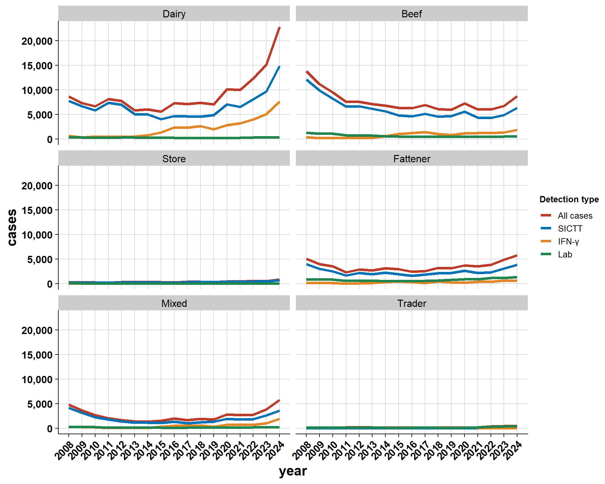
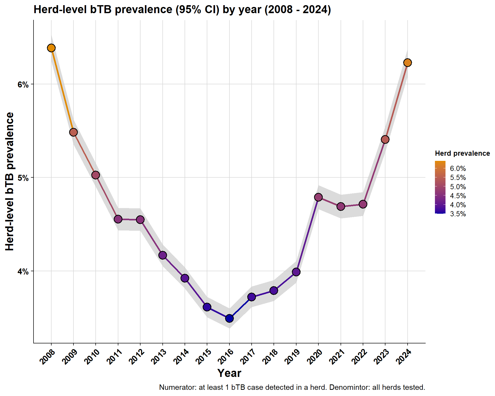

4 bTB case numbers and herd-prevalence by different herd-types
\(~\) \(~\)
4.1 Cases over time
4.1.1 by year:
4.1.2 by month:
4.1.3 by herd-type

\(~\) \(~\)
\(~\) \(~\)
4.2 Proportion of cases by herd-type
4.2.1 AHCS
4.2.2 Brock et al. herd-types
4.2.3 Brock et al. herd-types (sub-groups)
\(~\) \(~\)
\(~\) \(~\)
4.3 Herd-level bTB prevalence
4.3.1 Overall prevalence

4.3.2 Brock et al. herd type prevalence
4.3.3 Brock et al. herd type prevalence by county
4.3.4 Brock et al. herd type sub-classes prevalence
\(~\) \(~\)
\(~\) \(~\)